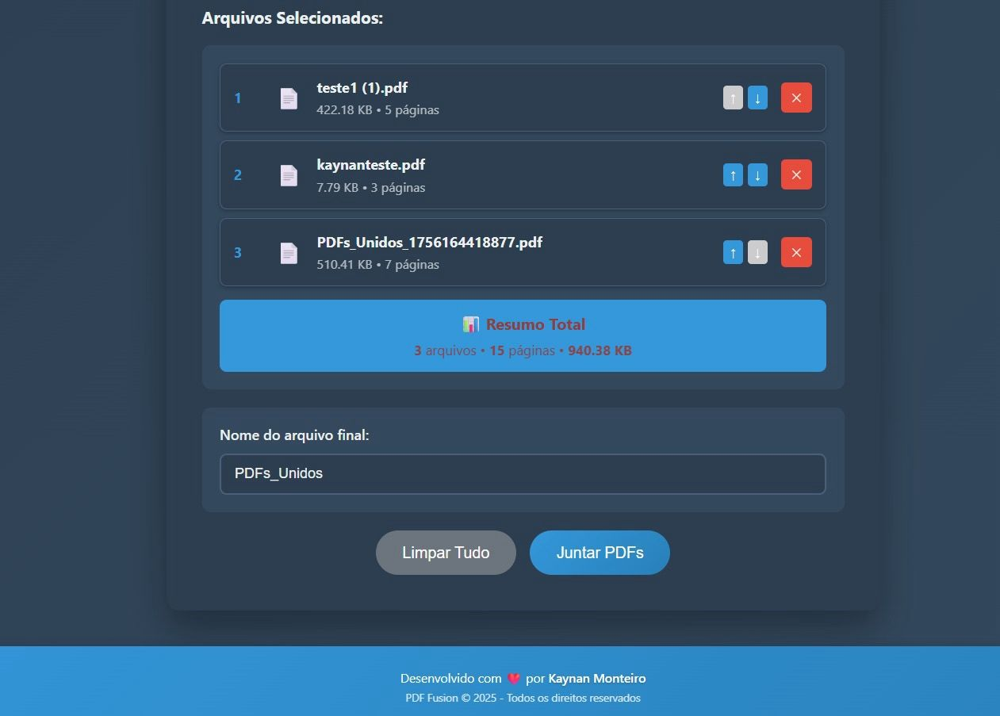
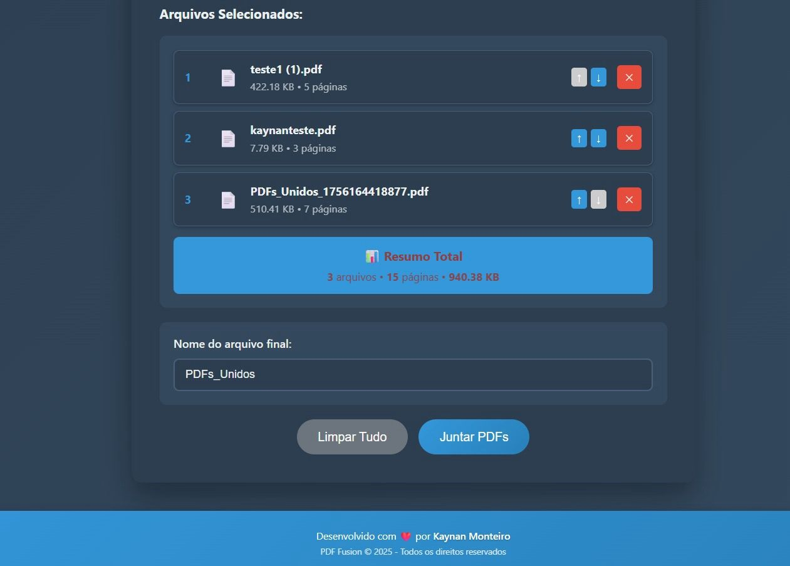

Caso Real: Notificações Inteligentes de WhatsApp com JavaScript
Em meu primeiro mês, identifiquei a necessidade de monitorar clientes no WhatsApp. Desenvolvi uma extensão do Chrome usando apenas JavaScript para criar notificações inteligentes, aumentando a agilidade e produtividade da equipe de atendimento.
Ler relato completo no LinkedIn →